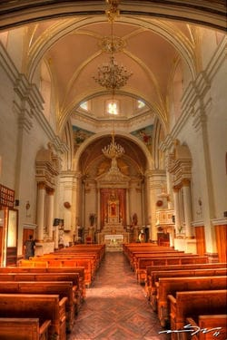
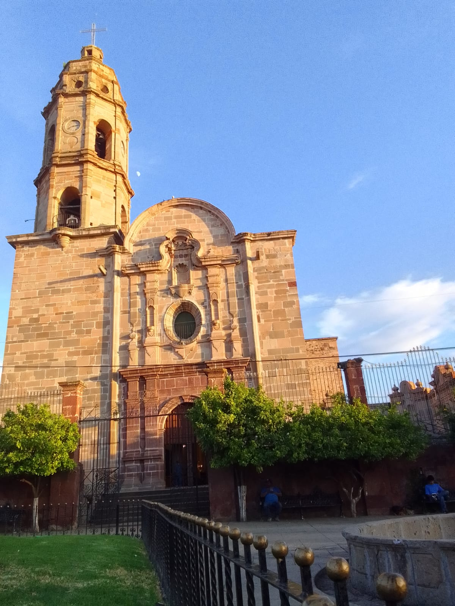
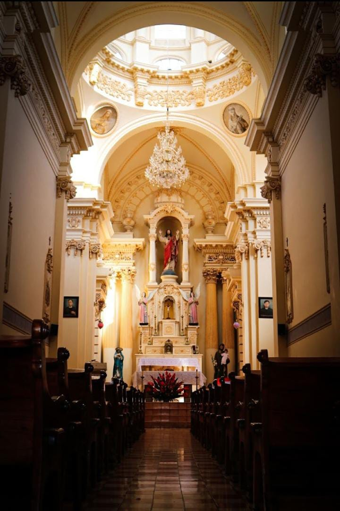
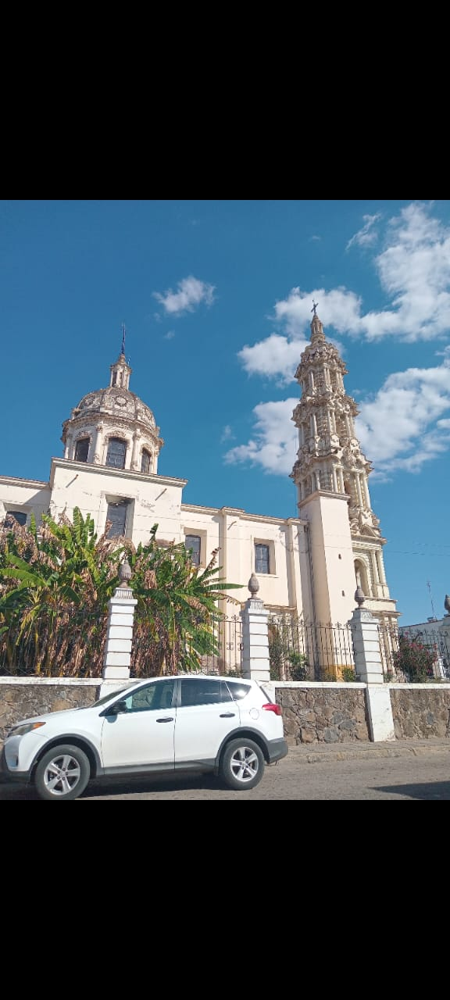
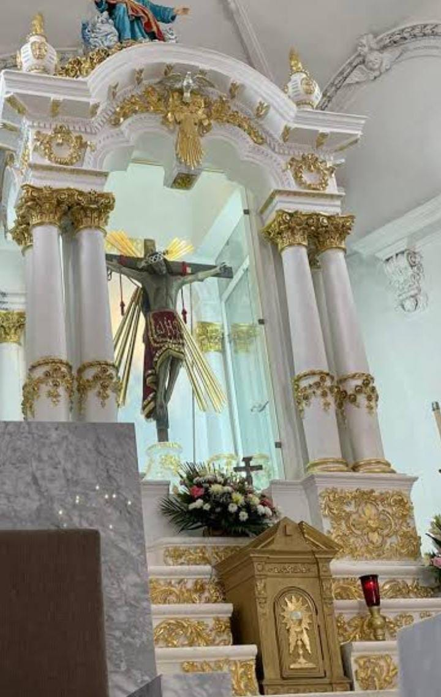
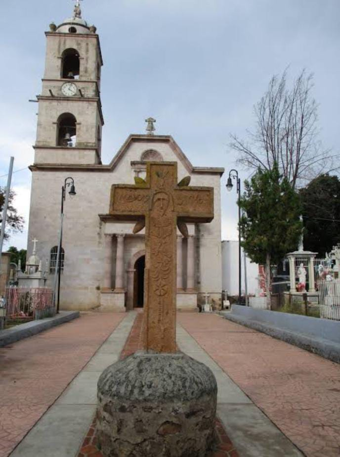
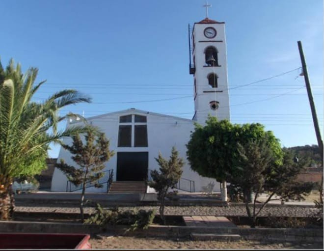
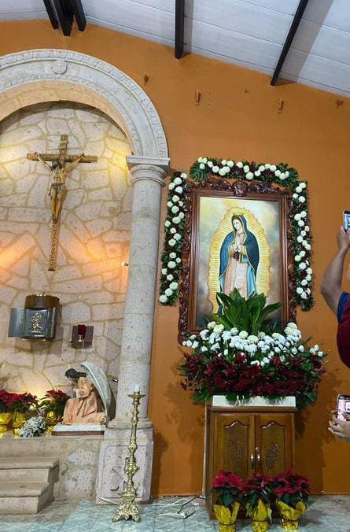

Es el principal templo de Cuquio Jalisco, se ubica en el centro historico 45480 Cuquio Jal. Fue creado en 1762-1834. su santo es San Felipe de Jesus. Se concidera un lugar muy religioso, y en vacaciones es muy visitado. Aquí se hacen las celebraciones honor a San Felipe apóstol,y es donde se hacen las misas de las tradiciones del pueblo de cuquio


Se ubica en C.Alvaro Obregon 45480 Cuquio Jalisco. Fue creado para que se pudiera reunir culto al sagrado corazon,que es el que rinde tributo al este templo. Se construyo en 1906-1919.


Se encuentra en el pueblo de Teponahuasco en el municipio de Cuquio Jalisco. En este lugar se venera a un crusifico de pasta de caña, el santo de Teponahuasco es el señor de Teponahuasco. Cada domingo del mes de julio es llevado al templo de San Felipe . Se dice que el señor se Teponahuasco es muy religioso ya que ha cumplido muchos milagros.


Las cruces el templo donde se hacen las celebraciones cuando son las confirmaciones y primeras comuniones las misas son echas en este templo, el santo qué está en el templo es San Rafael Arcángel.

